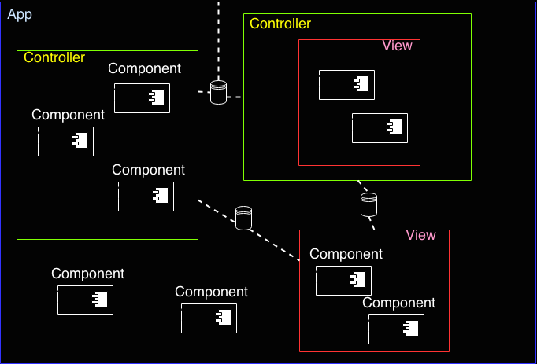

Architecture
History
Jails has no relationship with Rails, but I really like Rails and the way it just simplified the way we develop a MVC applications.
Using the same philosophy, Jails tries to help developers to create a robust and organized architecture to your client side applications.
The workflow
Jails splits applications into 6 abstractions:
- App
- Component
- Model
- View
- Controlller
- Modules
App, Controller and View shares a data variable which is readable and writable for these classes.

Model
Model is not related to any of these classes, it should work on it's own shell, so, model is a regular AMD module.
App/View/Controller
Those 3 classes inherits from the same main class, and they have the same methods.
View is a particular one. The View is a controller but has it's own methods and strategies to deal with templates, because of that, it's a little more slow then a regular Controller which doesn't have these rendering/template methods.
Controller exists only to speed up your applications, you can use them instead Views if you don't have to handle with rendering and templating.
What about the App ?
App is a main controller, it wraps all the components, views, controllers and is used to start a property of data variable, or any other global action.
Component
Component exists in their own world, it doesn't have any relationship with other elements in the page. Like a validation component for instance, or a datepicker, even a styled selectbox can be treated as a component.
The only job of component is to emit events to their parents.
Modules
A Module is just a AMD module, it doesn't have any relationship with Jails core.